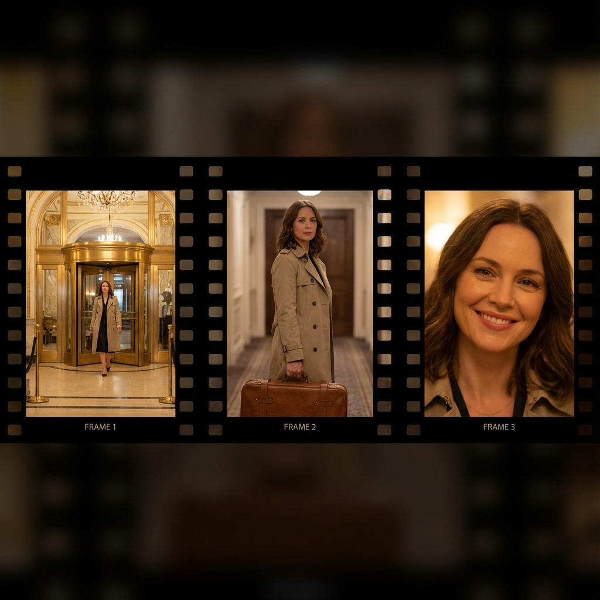
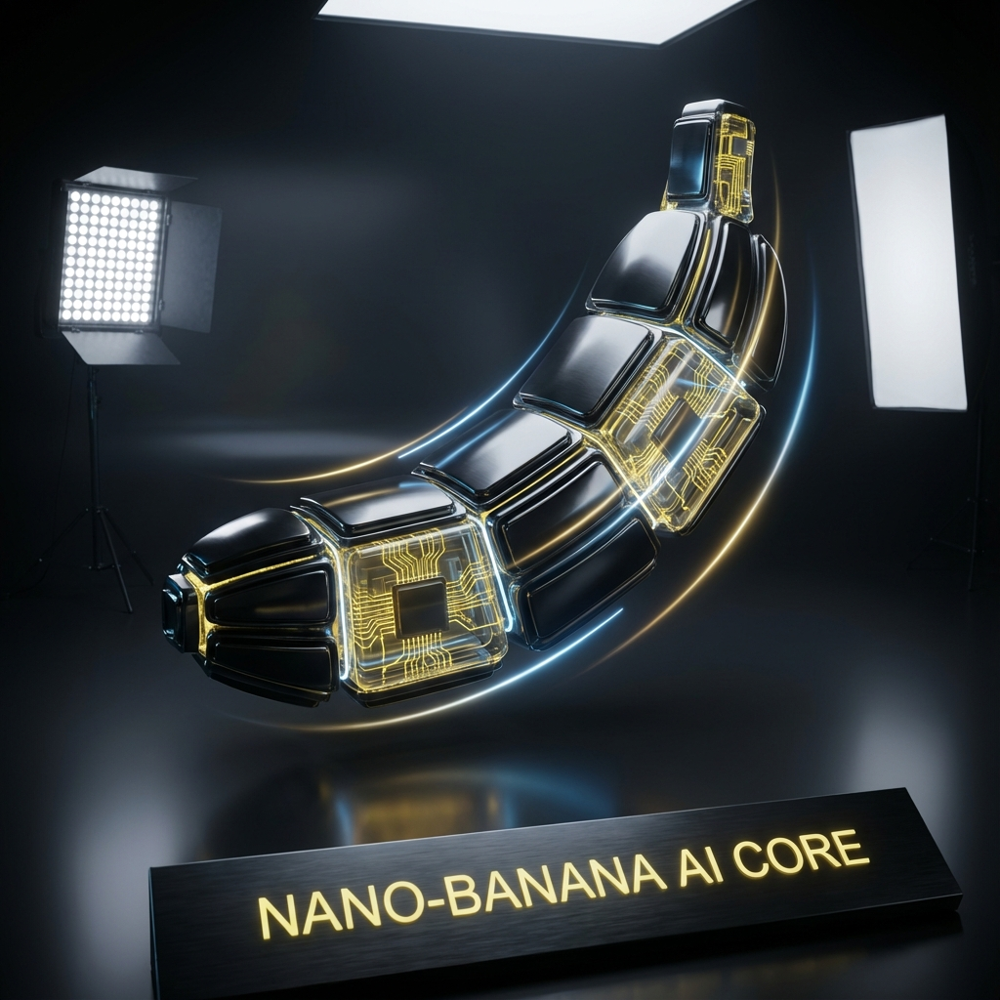
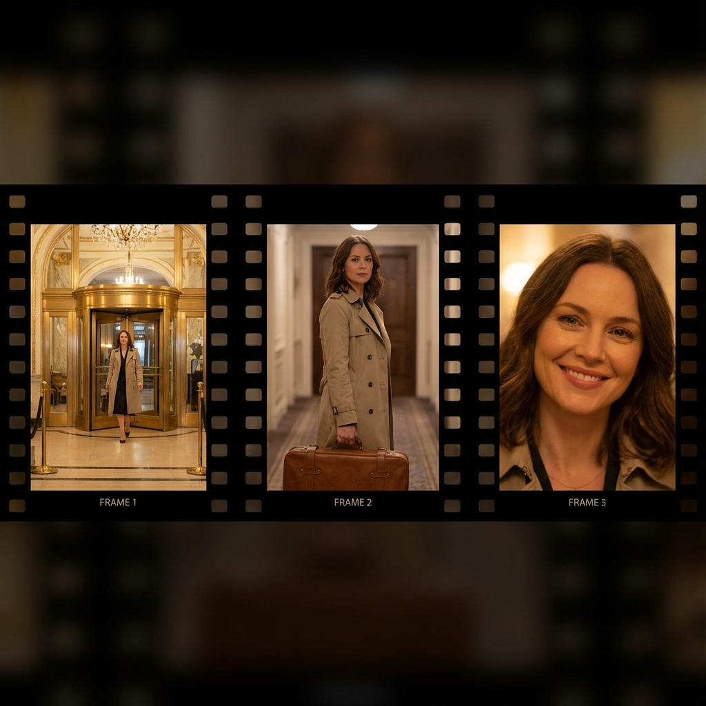

第8章：单次生成故事板
无需网格，生成连贯的叙事镜头。

PROMPT: 电影概念艺术
"创建一个 9 部分故事，讲述一男一女在奢侈品广告中的故事。人物身份和着装全程保持一致，角度多变。逐张生成 16:9 格式图片。"
Nano-Banana Pro 代表了生成式 AI 的一次重大飞跃。它不再局限于生成有趣的图片，而是专注于提供功能性的专业资产生产能力。在文本渲染、角色一致性、视觉合成及世界知识方面拥有 SOTA 级表现。
停止使用“标签堆砌”（Tag Soups）。Nano-Banana Pro 是一个会思考的模型，请像创意总监一样与它沟通。
如果图片 80% 是完美的，不要重新生成。直接告诉模型："这很好，但把光线改成日落"。
❌ 坏：酷车，霓虹，8k
✅ 好：一张充满电影感的广角镜头，展示一辆未来派跑车...
定义材质、光线和情绪。不要说"一个女人"，要说"一位身穿复古香奈儿套装的优雅女士"。
告诉模型"为什么"做这张图。例如："为一本高端美食杂志制作一张三明治图片"。
生成清晰、风格化的文本，并将复杂信息压缩为视觉图表。
利用"身份锁定"技术，支持最多 14 张参考图，确保角色在不同场景下面部特征完全一致。
利用实时数据生成图像，减少幻觉。
模型会先"思考"并搜索相关信息，再生成图像。
通过对话式提示进行重绘 (In-painting)、修复和上色。
无需遮罩，直接对话。
黑白转彩色，保持风格。
将平面设计转化为空间可视化，或将 Meme 转化为 3D 渲染。
原生支持 4K 生成，完美呈现微观细节。
模型在生成前会进行视觉推理，适用于解题和逻辑分析。
无需网格，生成连贯的叙事镜头。
利用草图、线框图或网格严格控制布局。
测试提示词的最快方式。
查看 API Cookbook 获取代码片段。